before after examples
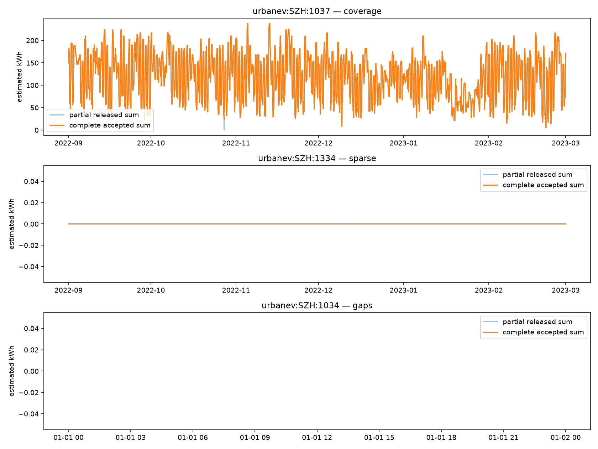
02/10/2026 · Report 1 · Local full-run evidence
Candidate hourly panels, chưa sẵn sàng strict online. Timezone/bin semantics, label availability và upstream masks còn cần xác minh. Không split, impute, scale hoặc training; EDA toàn kỳ chỉ mô tả.
EDA đầy đủ · Audit CSV · Checks · Báo cáo
Station-raw có volume ước tính; metadata22.650 pile IDs,82 rated-power records thiếu/không dương.

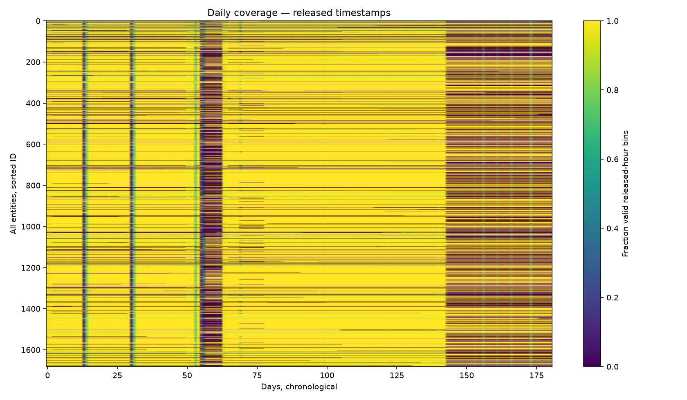
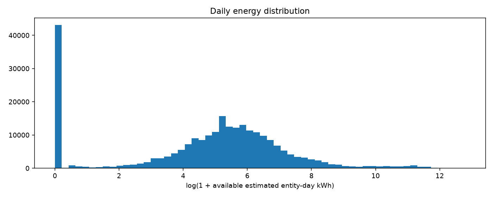
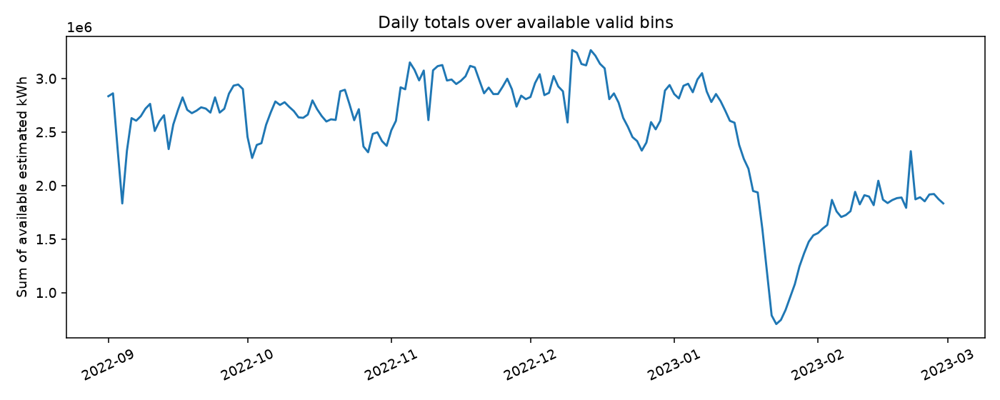
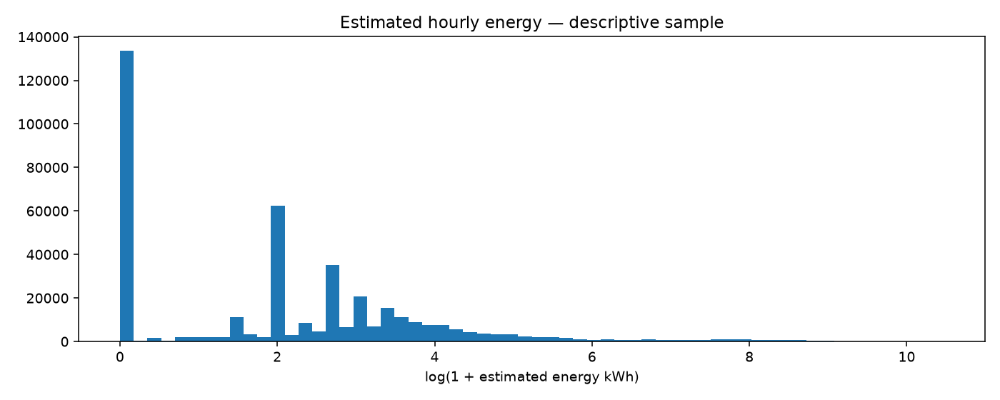
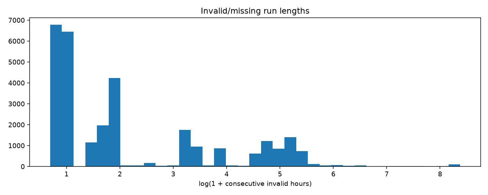
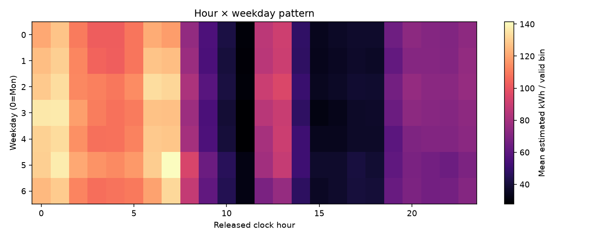
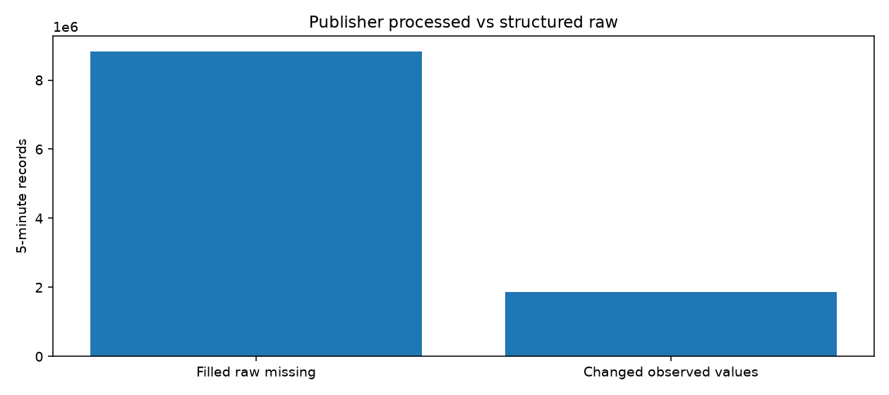

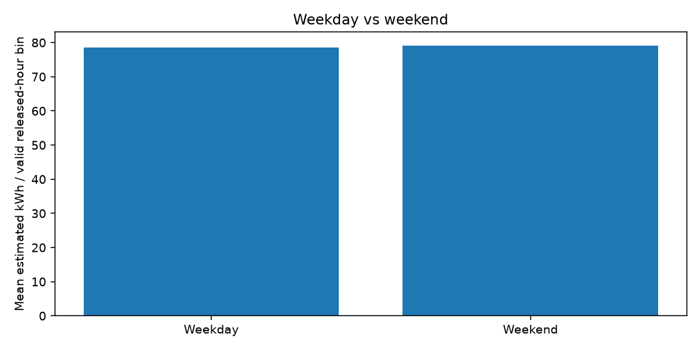
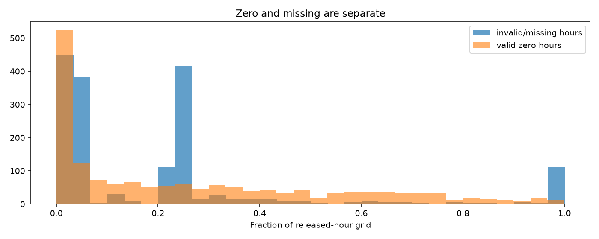
EDA đầy đủ · Audit CSV · Checks · Báo cáo
Standard six-city release; clean file không chứng minh observed gốc. Upstream interpolation/IQR có giới hạn causal.


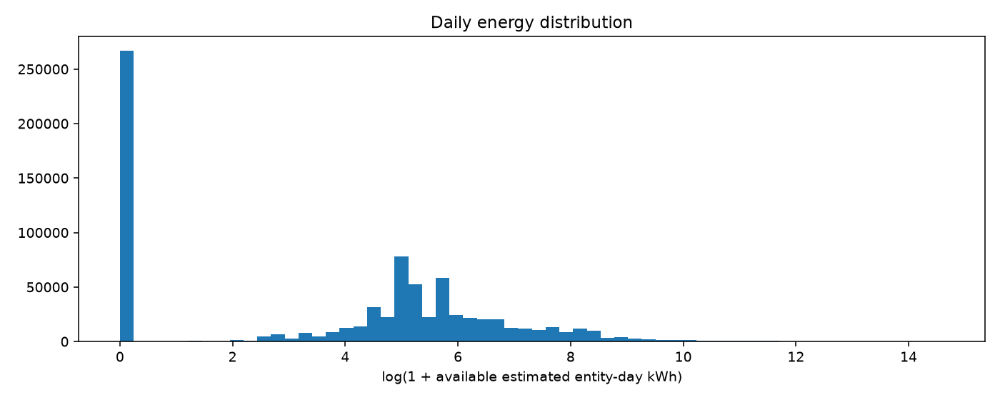
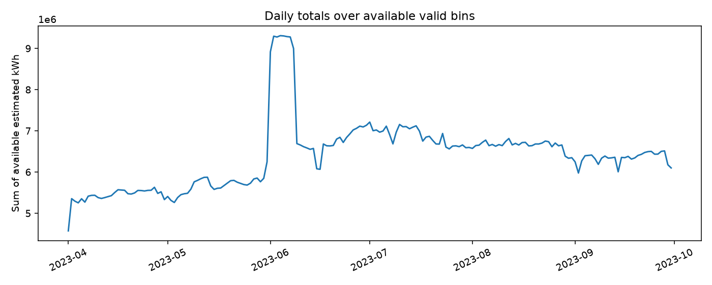
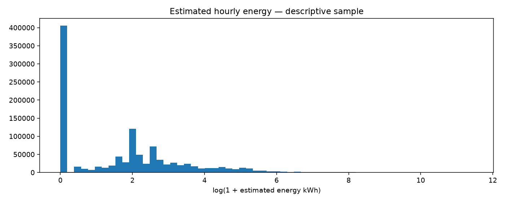

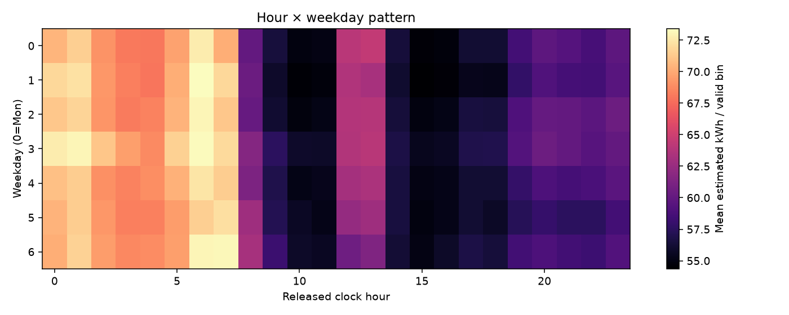
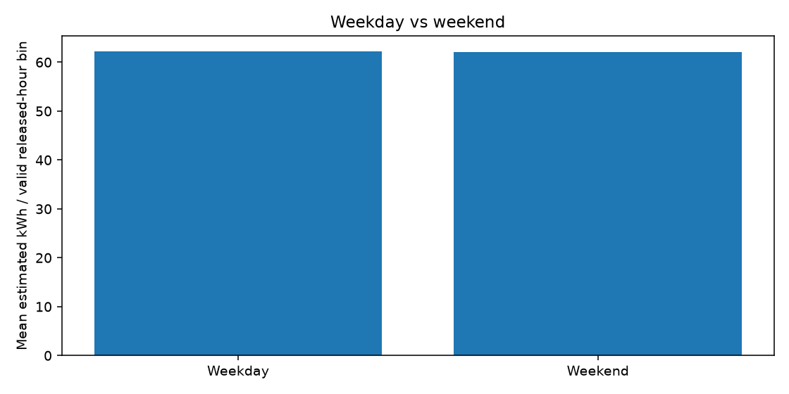
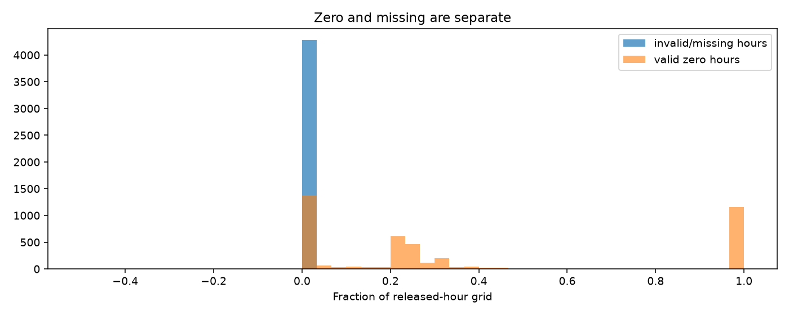